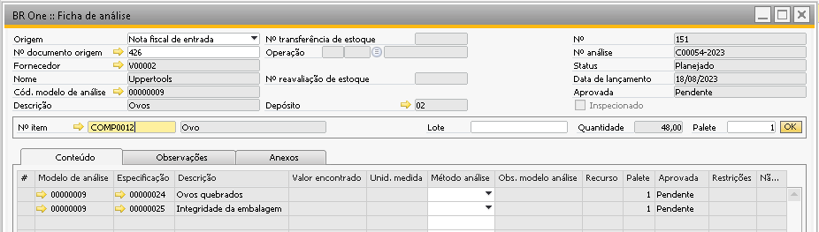
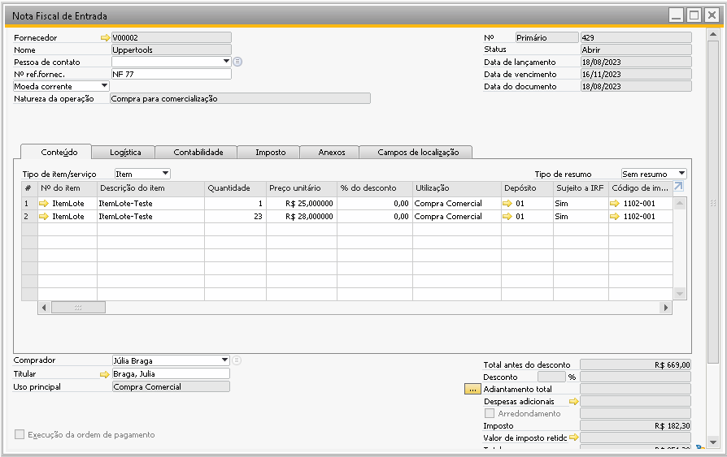

Origem - Nota fiscal de entrada
Quando a origem for ‘Nota Fiscal de Entrada’, será possível criar uma ficha de análise para o item que esteja vinculada a ‘Nota Fiscal de Entrada’.
No campo ‘Nº documento de origem’, serão exibidas as notas fiscais de entrada que possuam um ou mais itens que tenham algum modelo de análise vinculado.
{kind=link}
No campo ‘Nº documento de origem’, será possível selecionar os documentos que possuam um ou mais itens que tenham algum modelo de análise vinculado.
Após selecionar a nota fiscal de entrada é preciso também escolher qual item será analisado no campo ‘Nº do item’, só serão listados os itens que possuam modelo de análise vinculado.
O campo ‘Depósito’ será carregado automaticamente após carregar o ‘Nº do item’, ele é recuperado das linhas do documento de origem.
Caso haja mais de uma linha no documento com o mesmo item, o mesmo depósito e atribuído o mesmo lote (caso seja um item administrado por lote), após selecionar o item e o lote a quantidade será agrupada (somada) e será utilizada no campo ‘Quantidade’.
Conforme a simulação abaixo, é possível notar que ao selecionar o lote do documento, o sistema já atribui a quantidade 24. Isso ocorre mesmo caso o parâmetro ‘Agrupar linhas por Item/Lotes em fichas automáticas para compras’ esteja desmarcado.
{kind=link}